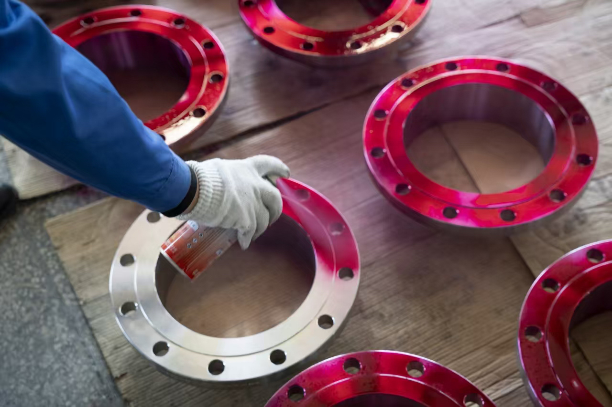
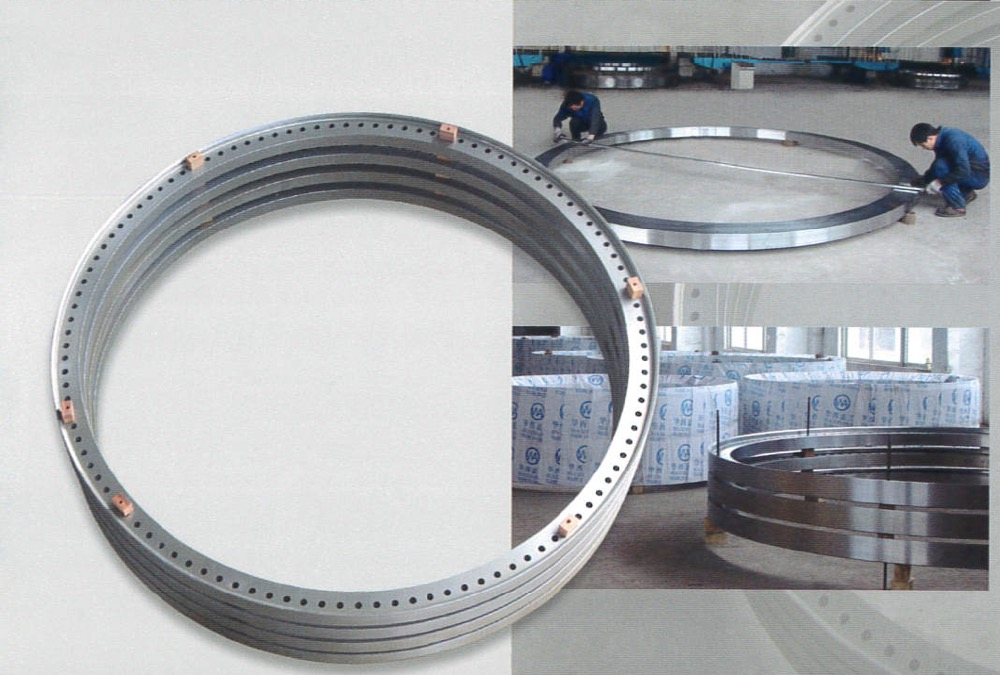

КАЧЕСТВО И ИСПЫТАНИЯ
Собственный контроль качества: неразрушающий контроль (УЗК, МПК, ПК), гидроиспытания, прослеживаемость по плавкам и партиям. Каждая позиция перед отгрузкой проверяется на соответствие спецификации.
Система качества FUI охватывает производство трубопроводной арматуры и кованых фланцев для нефтегазовой и химической промышленности, включая решения высокого давления до ASME/API Class 2500 (2500#).
Запросить MTC / протоколы →Контроль на месте и НК
На ответственных поверхностях выполняем капиллярный (проникающий) контроль для выявления поверхностных дефектов. Техники наносят пенетрант, удаляют излишки и используют проявитель для индикации — стандартный метод НК для фланцев и поковок. Для больших колец и фланцев применяются размерный контроль и ручные ультразвуковые или электронные толщиномеры. Все работы проводятся в регламентированных зонах с фиксацией результатов.




Неразрушающий контроль
Ультразвуковой контроль (УЗК) — выявление внутренних дефектов и измерение толщины; магнитопорошковый контроль (МПК) — поверхностные и подповерхностные дефекты в ферромагнитных материалах; капиллярный контроль (ПК) — поверхностные трещины и пористость на непористых материалах. Методы применяются по проектной спецификации и нормам (ASME, EN). Протоколы и прослеживаемость ведутся по плавкам и партиям.
Гидро-/пневмоиспытания и расходная верификация
Гидравлические или пневматические испытания выполняются по требованию стандарта или заказа. Испытания клапанов на расход и устойчивость регулирования поддерживают верификацию характеристик и оценку шума для severe service. Все данные документируются и прослеживаются.
Номер плавки, MTC и протоколы контроля
Номера плавок отслеживаются от поступления до ковки, механической обработки и приёмочного контроля. Сертификаты поставщика (MTC), отчёты по химии и механике, протоколы НК хранятся и могут поставляться с продукцией для QA проекта и регуляторных требований.
Оборудование для контроля и испытаний
Перечисленное оборудование используется для верификации материала, механических испытаний, НК и размерного контроля. Выбор и применение — в соответствии с нормами и требованиями проекта.
- Спектрометр прямого чтения ARL4460 — Быстрый химический анализ металлов для верификации материала и контроля качества.
- Универсальная испытательная машина с ЭВМ CMT5305 — Испытания на растяжение, сжатие, изгиб и срез.
- Маятниковый копёр Charpy ZBC2302-1 — Испытания на ударную вязкость.
- Автомат для надрезки ударных образцов QYJ4201 — Подготовка надрезанных образцов для Charpy/Izod.
- Низкотемпературная ванна для ударных образцов DWC-60A — Охлаждение образцов для испытаний при отрицательных температурах.
- Твёрдомер Бринелля HB-3000B-1 — Измерение твёрдости по Бринеллю.
- Камерная электропечь SX2-24-12 — Термообработка и высокотемпературные испытания.
- Шлифовальный станок для спектральных образцов GPM-1 — Подготовка поверхности для спектрального анализа.
- Ультразвуковой дефектоскоп CTS-9002, CTS9003 — УЗК внутренних дефектов.
- Магнитно-порошковый дефектоскоп — МПК поверхностных дефектов в ферромагнитных материалах.
- Портативный металлоанализатор XLT898 — Экспресс-анализ состава на месте.
- Ультразвуковой толщиномер UTM — Измерение толщины с одной стороны.
- Твёрдомер Роквелла HR-150A-1 — Измерение твёрдости по Роквеллу.
- Капиллярный контроль DPT-5 — Контроль поверхностных дефектов пенетрантом и проявителем.
- Металлографический анализатор DMILM — Микроструктурный анализ.
- Измерительный инструмент (150–5000 мм) — Размерный контроль в указанном диапазоне.